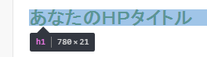
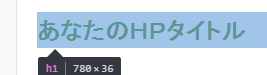

行の高さや行間を指定する line-height
CSSでフォントサイズを何も指定しなかった場合、ブラウザのデフォルトでは16pxになりますので、１文字の高さも横幅も16pxで表示されます。
なので、フォントサイズを何も指定せず、高さ16px（height:16px;）で指定したボックスに文字を入れるとびったり収まります。
■ボックスの高さ16px
また、横幅16px（width:16px）で指定したボックスに入れてもぴったり収まることになります。
■ボックスの横幅16px
けれども、高さを半分の8pxに指定した場合、フォントサイズが16pxなので入り切りません。
■ボックスの高さ8px
また、ボックスの高さを倍の32pxに指定した場合、上に貼りついて余白が生じてしまいます。
■ボックスの高さ32px
これは以下のようにちょうど２行分の高さになります。
■ボックスの高さ32px、１行の高さ16px
「等幅フォント」や横幅が調整される「プロポーショナルフォント」の違いにより、必ずしも上のように表示されるとは限りませんが、概ね、デフォルトの状態では文字の高さが行の高さになると考えておくとよいでしょう。
line-heightで行の高さを指定する
上の例では１行の高さが16pxなので、ボックスの高さが32pxの場合は２行になって表示されています。これをline-heightで１行の高さをボックスの高さと同じ32pxに指定すると、次のように１行でぴったり収まります。
■ボックスの高さ32px、１行の高さ32px（line-height:32px;）
これをcssで書けば、次のようになります。
.sample {
font-size: 16px;
height: 32px;
line-height: 32px;
}
このline-heightを指定すると、「行の高さ」から「文字の高さ」を引いた残りが上下均等に配分されます。上の例でいうと、「行の高さ」の32pxから「文字の高さ」の16pxを引いた残りの16px分が上下均等に8pxづつ配分されますので、上下に8px分の余白が出来ることになります。
line-heightは高さの中央に配置する際に便利
文字をボックスの高さの中央に配置する際、line-heightを使わず、paddingで8px分の余白を上下に均等に指定することもできますが、ブラウザによってはぴったり中央に配置されないケースも生じてきます。
そのような場合、このline-heightで１行の高さをボックスの高さと同じ値に設定すれば、自動的に上下に均等に配分されるため、ブラウザによる違いがなく中央に配置することができます。
line-heightによる行間の指定は150%前後が最適
上の例でボックスの高さを倍の64pxにした場合、行と行の間に8pxづつ余白が生じるため、16px分の行間が空くことになります。
■フォントサイズ16px、ボックスの高さ64px、１行の高さ32px（line-height:32px;）
この場合、文字サイズ16pxに対して１行の高さが2倍の32pxのため、line-height:200%;と同じ意味になります。これでは行間が空きすぎるため、実際はline-height:150%;ぐらいで指定して適度な行間をとるのが一般的です。
■line-height: 100%;
■line-height: 150%;
■line-height: 200%;
実際にサイトのコンテンツ中で使用する際、pタグなどの段落のなかで使うケースが多いと思いますが、line-heightを140%から160%程度で指定しておくとよいでしょう。一般的なニュースメディアの場合、160%で指定されているケースが多いです。
line-heightを「％」と「数値」で指定する際の違い
このline-heightをCSSで指定する際、「％」でも「数値」でもどちらも同じ意味になります。
①line-height:150%;
②line-height:1.5;
けれども、子要素の継承のされ方に違いがあるので注意が必要です。
例えば、以下のようになっていたとします。
①パーセントでの指定
body {font-size:14px;line-height:150%;}
h1 {font-size:24px;}
②数値での指定
body {font-size:14px;line-height:1.5;}
h1 {font-size:24px;}
CSSでの違いは太字の部分だけになりますが、実際の表示のされ方は以下のように違ってきます。
①パーセントでの実際の表示 → h1の高さが「21px」

②数値での指定 → h1の高さが「36px」

どちらも行の高さを1.5倍にしたいという意図で指定していますが、①のようにパーセントで指定した場合、bodyで指定している14pxの1.5倍の「21px」の高さがh1に継承されてしまいます。
一方、②のように数値で指定した場合、1.5倍という倍率が継承されますので、h1の24pxの1.5倍で高さは「36px」になります。
デフォルトの状態でのbodyのフォントサイズは16pxになりますので、14pxなどと指定していなかった場合でも、line-height:150%;とパーセントで指定するとh1の高さが「24px」になります。
どちらがよいのかについては、ケースバイケースになるかと思いますが、一般的にはline-height:1.5;などと数値で指定されているケースが多いかもしれません。